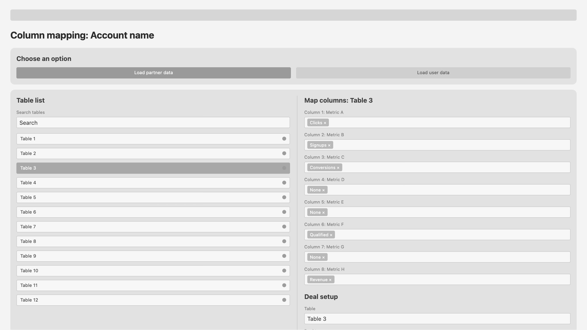
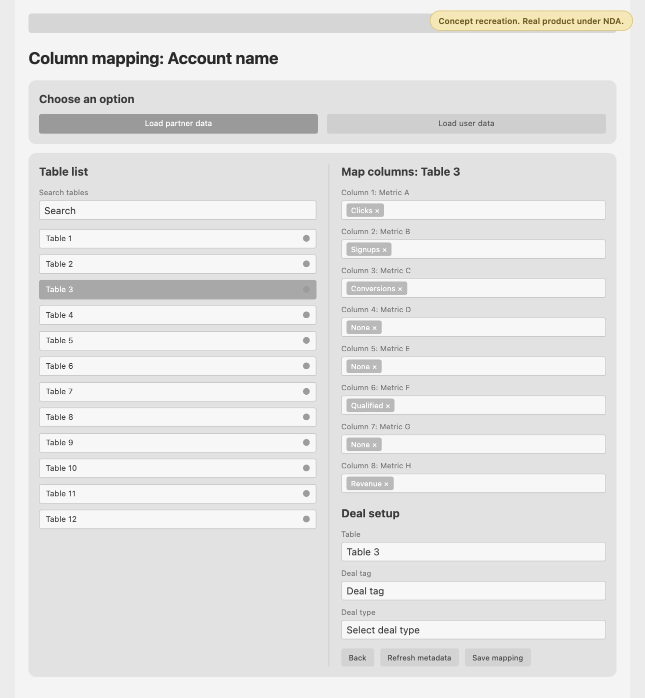

- Status
- In use, under NDA
- Work
- Product design
- Product
- Internal data tools
Internal reporting tools
A console that collects performance data from hundreds of partner accounts across dozens of platforms, so the reporting team no longer copies numbers into spreadsheets by hand.
An estimated 10–20 hours a week back for each person on the reporting team.


Both screens are concept recreations with fake data. The real product is under NDA.
- ClientCanadian marketing-technology company (under NDA)
- ProductInternal tools for collecting data and building reports
- My roleThe only designer, working with front end and back end developers. UI and design system, first working builds in Figma Make, data flows, data validation and testing
- ScopeLead a reporting team of three and support a second team of the same size. The tools serve about 12 people across the company's reporting teams. I scope them with the PMO, two developers, a database administrator and infrastructure, and shape dashboards with commercial leads, managers, marketing and people close to the executive team.
- TimelineFirst version shipped late 2023. Redesign shipped in 2025, in about two months
- StatusIn use
Every report started with someone logging in to every account.
In plain terms: the company works with hundreds of partners. Each one gives us access to an account on their own reporting platform, where we can see numbers like clicks, signups and revenue. Every platform names and lays out those numbers differently, and each partner has a deal that sets how the numbers turn into what they pay.
We filled out performance reports by logging in to every account and entering the data into a spreadsheet by hand. That data was combined and sent as reports to managers, commercial marketing leads and executives, who used it to make finance decisions.
I spent a week on site with the developers for an intensive build. I designed the UI and explained how the data flows. I also researched the API documentation for the platforms that provide it and tested the data for accuracy. My team and I have kept that process going as the system has grown.
It had to be built in Streamlit, so I could only use its components. The bigger problem was the workflow: every element of every table had to be mapped by hand.

I redesigned the UI and its design system in Figma, then built the first working versions myself in Figma Make. I walked it through the functionality each screen needed, step by step, checked every element it produced and had it go back and fix what wasn't right. I tested the user flow with my team and kept refining with their feedback until we were happy with how it worked. Then we moved the build to Claude Code, where the developers took it to production. It shipped in about two months. The first version took months and was never as good as we needed.
Map one table, and the whole account is mapped
Most platforms use a fixed set of headers, so a model recognises their columns automatically, even when the wording varies a little. Bulk mapping is for the platforms that let owners write their own headers and build their own tables.
Copying a mapping from one account to another doesn't work, because no two accounts are set up alike. So the user maps a header's wording once, and the tool applies it to every other table in the account that uses the same wording. The first version shipped without this because there wasn't time to build it; AI made it quick to add in the redesign.

One deal setup for many campaigns
Search campaigns by their deal, select them, and apply one deal setup to all of them. Some accounts set deals per table and others per campaign, so the same screen covers both: tick individual campaigns or tables, select everything a search returns, or leave the search empty to set a deal for the whole account.

A notification centre that keeps data collection running
It flags anything that would stop data coming in: login errors, such as wrong credentials on a platform we read through web scraping instead of an API; a table that changed and needs its columns remapped; a new deal that needs setting up and mapping.
Before, a Slack bot posted each issue and someone had to react to the message to mark it done, so there was never a clear view of what was still open. Now each notification takes you straight to the account setup or mapping screen where the fix happens, and clears itself once it's fixed, ignored or dismissed.

Built for platforms that don't agree
Some platforms let account owners rename and move any column, so the only reliable way to match their columns to our metrics is for a person to assign them.
Some give total revenue but no commission column, so you have to calculate it yourself. Deals can vary within the same platform, and sales sometimes structure a deal differently from how it appears in the platform. That's why deal setup has to be fully flexible.
Some platforms limit how many calls you can make, so the daily loader pulls data at a custom rate for each one.
We did try fixing things at the source, by getting some platforms to switch on API access and asking account owners to change how their accounts are set up. But the accounts belong to our partners, not to us, so we rarely get a say in how a platform works. The tools had to handle the variety instead.
Check it against the old reports
We ran the new reports alongside the old ones on historical data and compared them line by line. The data was only released for company use once accuracy passed an agreed threshold and was approved. My team and I signed off.
Checking didn't stop at launch. The team rotates through accounts and checks the data routinely, and each round comes back more accurate: the notification centre catches the big issues, and most small gaps now come from the platforms rather than our side. Next, I'd flag unusual numbers automatically, so the team can check data after the fact instead of checking everything up front.
| Metric | Spreadsheet | Console | |
|---|---|---|---|
| Clicks | 48,210 | 48,210 | Match |
| Signups | 3,904 | 3,904 | Match |
| Revenue | 61,775.40 | 61,775.40 | Match |
| Commission | 18,532.62 | 18,540.12 | Check the deal setup |
- Time
An estimated 10–20 hours a week saved
For each person on the reporting team, because nobody logs in to sources and pastes data into spreadsheets any more.
- Quality
Fewer errors and manual fixes, and faster reports
We know from our QA. Human error used to be common; now the automation collects the data and a person who understands it checks it. It also takes fewer people to run.
- Upkeep
Bugs get caught and fixed faster
Thanks to the notification centre and the shorter build cycle. Most changes now are small improvements the team asks for.
- Team
My team moved from data entry to QA
As the tools took over collecting the data, I moved my team from manual data entry to quality assurance. I got them SQL training so they could query the database and check the data themselves.
Looking back
Documenting as we went paid off
We kept notes on every platform the whole way: logins that fail on platforms we read by web scraping, owners who rename their columns, deals that sales set up differently from how the platform shows them. That record is what let us redesign quickly instead of relearning each platform.
Map the whole flow before the screens
Version one's real problem wasn't the screens. It was that every table had to be set up by hand. Mapping the full setup flow earlier, with the developers, would have brought bulk mapping and bulk deal edits into the first version.
Keep the build loop short
The first version took months. The redesign shipped in about two months, and problems now get fixed faster. Most of what we add now are small improvements the team asks for.